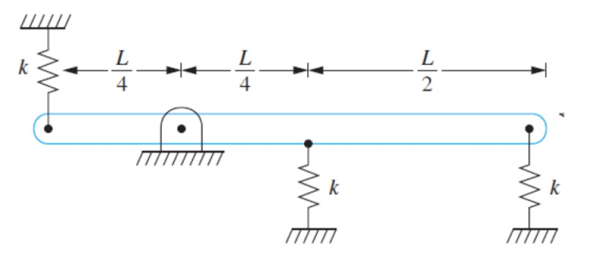

Samme bevægelsesligning to veje: energi og Newton. Ingen tal, kun symboler
OPGAVEN (HORIZONTAL ROD W. FIXED AXIS AND THREE SPRINGS)
En jævn, slank stang (længde , masse ) drejer frit om en vandret akse fra venstre ende. Tre ens fjedre sidder i venstre ende, på midten og i højre ende. Ligevægt med stangen vandret, små svingninger.
a) Bevægelsesligning med energimetoden. b) Bevægelsesligning med et fritlegemediagram. c) Egenperioden.
1 · (a) Energi(22-17)
2 · (b) Newton(17-16)
3 · (c) Periode(22-12)
4 · Tjekenheder og L

→ / mellemrum: næste · ←: forrige · F: fuld skærm · ☰: alle 10 opgaver
Fjederens sammentrykning = arm gange vinkel (små vinkler)
Ophæves af fjedrenes forspænding i ligevægten. Mål V fra ligevægten
1
Inertimoment om O
2
Armene fra O:
3
Differentiér
Hvilken fjeder gør arbejdet?
Højre fjeder har tre gange armen, og armen står i anden: den giver 9 ud af 11 dele, altså 82 % af stivheden
SIGEnergien er kinetisk energi af rotationen plus fjederenergi. Armen står i anden, så fjederen længst ude dominerer.
TRIN 2 · (b) NEWTON
Fritlegemediagram og moment om O
Rotation om fast akse
Hibbeler (2023), lign. (17-16)
Ekstra fjederkraft ud over ligevægten. Den trækker altid stangen tilbage
Arm, samme afstand som fjederen er trykket sammen med
Tyngde og statisk forspænding giver nul moment i ligevægten. De forsvinder
Lejekræfter i O har ingen arm
4
Moment af hver fjeder (θ mod uret)
5
Newton om O
6
Samme ligning som (a): L forkorter ud
Stangen drejet en lille vinkel
θ
SIGMed Newton tager jeg momentet af hver fjeders ekstra kraft om O. Tyngden og forspændingen går ud mod hinanden, og jeg får samme ligning som med energimetoden.
TRIN 3 · (c) EGENPERIODE
τ = 2,89·√(m/k)
Fri udæmpet svingning
Hibbeler (2023), lign. (22-1) og (22-2)
lign. (22-12)
Tallet foran θ, når står alene
Opgaven giver ingen tal. Grafen bruger kg og N/m som eksempel
7
Naturlig vinkelfrekvens
8
Egenperiode
9
Eksempel (ikke givet)
Svingningen, eksempeltal
m
k
ωn34,3rad/s
τ0,183s
SIGNår θ-dobbeltprik står alene, er tallet foran θ ωn i anden. Perioden er 2,89 gange kvadratroden af m over k.
TRIN 4 · SVAR OG TJEK
Er resultatet rimeligt?
✓
Enheder ✓
✓
L forsvinder
Både og fjedrenes moment går som . En dobbelt så lang stang med samme masse og fjedre svinger lige hurtigt ✓
✓
(a) og (b) er ens
To uafhængige metoder giver samme ligning. Kun højre fjeder: . De to andre lægger 10 % til ✓
Hvad nu hvis aksen flyttes?
Akse p · L
IO / mL²0,146
STIVHED / kL²0,688
ωn·√(m/k)2,171
ωn·√(m/k) mod aksens placering · fjedrene bliver i 0, L/2 og L
Aksen i midten: er mindst, men midterfjederen får ingen arm. Kun enderne virker:
SIGEnhederne giver sekunder, L forkorter ud, og energi og Newton giver samme ligning. Det er tre uafhængige tjek.